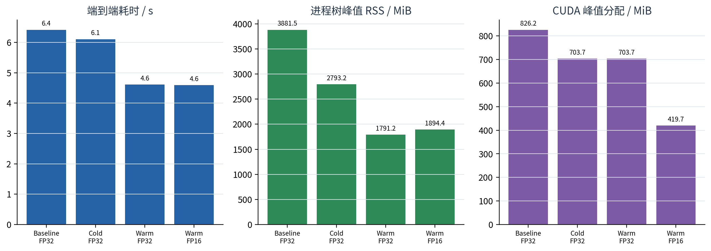
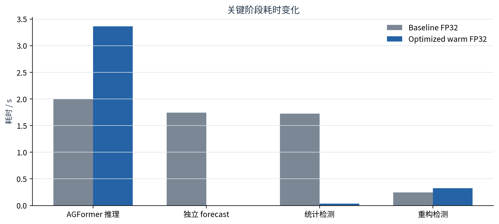
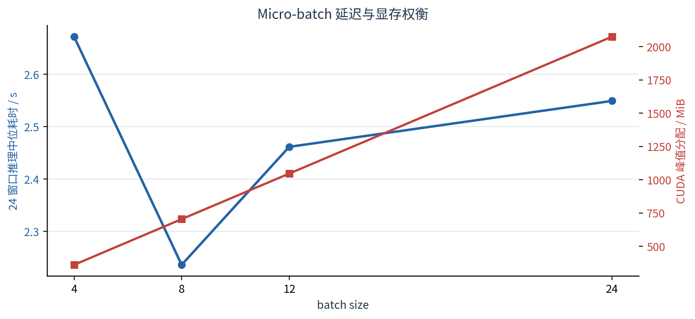
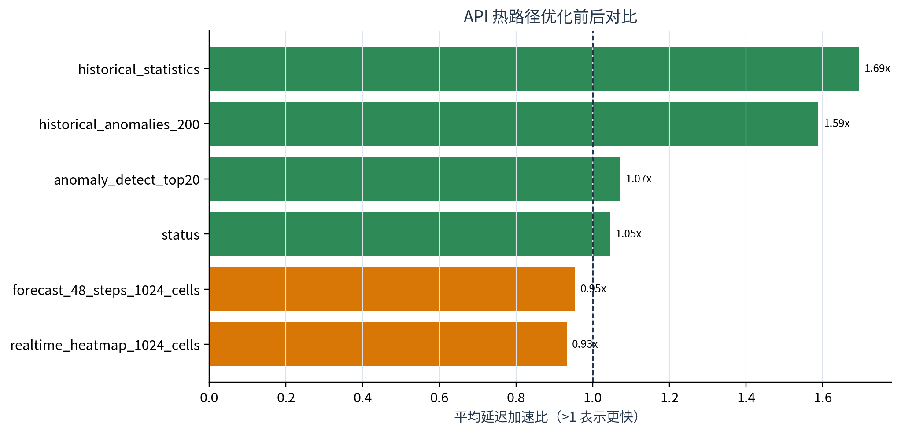

结论摘要： 生产可部署的 FP32 执行优化将暖启动流水线从 6.416s 降至 4.613s，端到端加速 1.39×；进程树 RSS 汇总下降 53.9%，CUDA 峰值分配下降 14.8%。FP16 精度门槛通过但本轮速度门槛未通过，动态 INT8 只保留为 CPU fallback 候选，生产继续使用 FP32。
| name | pipeline_seconds | model_inference_seconds | forecast_inference_seconds | statistical_seconds | peak_rss_mib | cuda_peak_allocated_mib |
|---|---|---|---|---|---|---|
| baseline_fp32 | 6.4161 | 2.0058 | 1.7411 | 1.7231 | 3881.5195 | 826.2471 |
| optimized_cold_fp32 | 6.1063 | 3.0868 | 0.0000 | 1.9276 | 2793.1953 | 703.7471 |
| optimized_warm_fp32 | 4.6133 | 3.3640 | 0.0000 | 0.0377 | 1791.1523 | 703.7471 |
| optimized_warm_fp16 | 4.5962 | 3.3825 | 0.0000 | 0.0336 | 1894.3789 | 419.6846 |

暖启动 FP32 是正式生产候选：端到端加速 1.39×，同时减少 worker 带来的进程树 RSS。冷启动 FP32 仍需构建统计缓存，因此只获得较小收益。

| 瓶颈 | 修改 | 结果 |
|---|---|---|
| h1 与 Web forecast 重复加载四个 checkpoint 并重复前向 | 24 个窗口一次输出完整序列，h1 与最新 forecast 共享 | 独立 forecast 阶段由 1.741s 降至近 0 |
| 每次实时调用都拟合 inflow/outflow slot statistics | 以数据 SHA256、train_len、时区与规则参数构建指纹缓存 | 统计阶段由 1.723s 降至 0.038s |
| MultiheadAttention 默认返回但调用方丢弃权重 | 普通预测 need_weights=False，XAI 时显式开启 |
FP32 fusion mask 保持完全一致 |
| 24 窗口仍启动 2 个 DataLoader workers | 实测后改为 worker=0 | 减少进程树 RSS 与启动开销 |
| API 每次重新转换事件时间并循环映射坐标 | mtime-aware 派生缓存 + vectorized merge | 历史事件/统计端点明显加速 |

| batch_size | latency_seconds_median | latency_seconds_min | latency_seconds_max | cuda_peak_allocated_mib_max | max_abs_diff_vs_first_batch |
|---|---|---|---|---|---|
| 4 | 2.6718 | 2.3823 | 2.9613 | 360.4971 | 0.0000 |
| 8 | 2.2359 | 2.1229 | 2.3489 | 703.7471 | 0.0000 |
| 12 | 2.4614 | 2.3596 | 2.5632 | 1045.9971 | 0.0000 |
| 24 | 2.5491 | 2.4911 | 2.6071 | 2074.2471 | 0.0000 |
batch=8 的中位延迟最低；batch=24 将峰值显存推至约 2,074 MiB，速度反而变慢。因此正式配置选择 batch=8，而不是盲目使用最大 batch。
pred_flow 最大绝对差：0.00012207；deploy_fp32_execution_optimizations=True。FP16 对四个时期的 256 个窗口进行了补充核验：masked MAE 从 10.305124 变为 10.305077，变化 -0.000048；融合掩码不一致率为 0.0。质量门槛通过，但同轮模型推理加速比仅 0.9945×，低于 1.05，因此 deploy_fp16=False。
CPU dynamic INT8 microbenchmark 的速度比为 1.305×，state_dict 仅缩小 1.24%，且只覆盖单模型、单窗口和 Linear 动态量化。当前生产推理在 CUDA 上运行，因此不部署 INT8，只把它记录为 CPU fallback 候选。

| endpoint | mean_ms_baseline | mean_ms_optimized | p95_ms_baseline | p95_ms_optimized | mean_speedup | result |
|---|---|---|---|---|---|---|
| status | 1.3308 | 1.2725 | 1.4688 | 1.5758 | 1.0458 | faster |
| realtime_heatmap_1024_cells | 12.4769 | 13.3823 | 13.2446 | 15.9920 | 0.9323 | slower/noise |
| forecast_48_steps_1024_cells | 41.8862 | 43.9020 | 43.0060 | 46.6114 | 0.9541 | slower/noise |
| anomaly_detect_top20 | 4.3330 | 4.0410 | 5.3741 | 5.0019 | 1.0723 | faster |
| historical_anomalies_200 | 19.4158 | 12.2232 | 20.7733 | 13.7642 | 1.5884 | faster |
| historical_statistics | 16.8250 | 9.9307 | 18.0365 | 11.7588 | 1.6942 | faster |
历史事件查询和统计端点分别约加速 1.59× 与 1.69×。热力图和 48×1024 forecast 的完整 JSON 响应本轮略慢，说明它们主要受 Python 对象构造、JSON 序列化和 gzip 压缩限制；不应宣称 API 全面加速。
优化后 API 冷启动 0.511s，空闲 RSS 125.75 MiB，基准期间峰值 RSS 137.39 MiB。
peak_rss_mib 是进程树 RSS 求和，共享页可能重复计算，不等同于物理 PSS；outputs/week7_performance/final_system_v5/，配置为 configs/week7_performance.yaml。